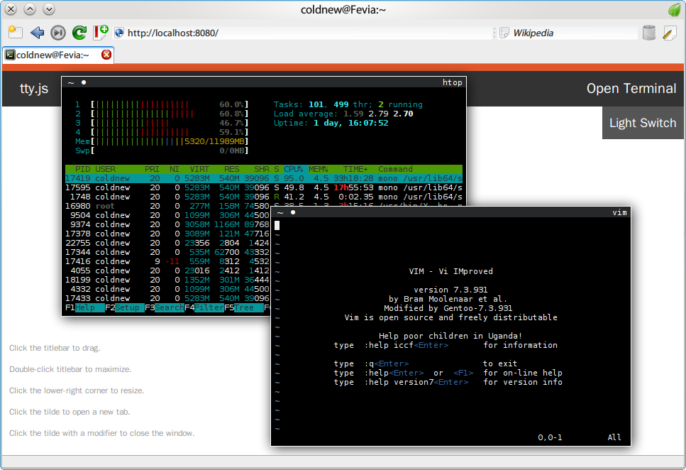

在 使用 ClojureScript 來寫 node.js 程式 一文當中，我們提到了可以用 ClojureScript 來寫 node.js 的程式，可是如果要引用 node.js 的外部函式，比 如說 tty.js 時，要怎麼辦呢？
tty.js 是一個可以讓你在瀏覽器下使用終端機的一個很酷的 node.js 程式，雖 然他是獨立的程式，但是也可以當作函式庫引用。
本篇文章將描述如何在 ClojureScript 裏面呼叫 tty.js 的函式來建立我們的 node.js 程式。
建立新的專案
我們首先先來建立一個新的開發環境，就叫他為 cljs-tty 好了
lein new cljs-tty
加入 cljsbuild 到你的專案
接下來，編輯 project.clj 將他變成下面這樣，注意到在這篇範例中，我
們還是使用 src 作為 ClojureScript 程式的資料夾。
如果你不知道為什麼 project.clj 要這樣設定，請參考我之前寫的文章: 使用 ClojureScript 來寫 node.js 程式
(defproject cljs-tty "0.1.0-SNAPSHOT" :description "ClojureScript with tty.js example" :url "http://example.com/FIXME" :license {:name "Eclipse Public License" :url "http://www.eclipse.org/legal/epl-v10.html"} :cljsbuild { :builds [{ :source-paths ["src"] :compiler { :target :nodejs :optimizations :simple :pretty-print true}}]} :dependencies [[org.clojure/clojure "1.5.1"]])
此外，這邊 Google Closure Compiler 的最佳化設定設定成為 Simple ， 這是因為 tty.js 是外部依賴，我們並沒有將他一起編譯進我們的程式裏面，若 使用 Advanced 的最佳化格式，則會使我們的變數或是函式名稱和 tty.js 的 不同，導致執行程式時出錯。
使用 npm 來加入 node.js 套件
畢竟我們是要透過 ClojureScript 來呼叫 node.js 的函式庫，自然需要使用 npm
來安裝需要的套件，因此你必須先在專案的頂層目錄加上 package.json ，
並加入以下資訊 (或是使用 npm init 來建立 package.json)
{ "name" : "cljs-tty", "version" : "0.0.1", "dependencies" : { "tty.js" : "0.2.10" } }
我們在 package.json 裏面加入了 tty.js 作為我們 node.js 程式的依賴，完 成後使用
npm install
來下載 tty.js 程式，他會被放到 node_modules 下。
改程式碼的時間到了
在我們的主程式 core.cljs 裏面，要添加下面的 ClojureScript 程式碼，你 可以將他和左邊的 javascript 程式碼來對照看看 (tty.js 提供的範例程式)， 我們將在後面說明這些程式碼的用途。
javascript
var tty = require('tty.js'); var app = tty.createServer({ shell: 'bash', users: { foo: 'bar' }, port: 8080 }); app.get('/foo', function(req, res, next) { res.send('bar'); }); app.listen();
ClojureScript
(ns cljs-hello.core (:require [cljs.nodejs :as nodejs])) (def tty (nodejs/require "tty.js")) (def app (.createServer tty (clj->js {:shell "bash" :users { :foo "bar" } :port 8080 }) )) (.get app "/foo" (fn [req, res, next] (.send res "bar"))) (defn -main [& args] (.listen app)) (set! *main-cli-fn* -main)
在我們的 ClojureScript 的第一步，除了宣告命名空間 (namespace) 外，我們 也需要載入 node-clojurescript 的函式庫，你不需要安裝他，因為這步驟 cljsbuild 已經幫你做好了。
(ns cljs-hello.core (:require [cljs.nodejs :as nodejs]))
我們載入 cljs.nodejs 函式，並將他的名稱改為 nodejs，這樣比如我們要使 用 cljs.nodejs 庫的 foo 函式，則使用 nodejs/foo 就好了。
接下來談談外部函式庫的載入，在 javascript 中我們是這樣做
var tty = require('tty.js');
使用 require 將 tty.js 載入後，綁到變數 tty 下，而 ClojureScript 的作 法則是這樣
(def tty (nodejs/require "tty.js"))
是不是和 javascript 長的很像? (註：以歷史的角度來看，目前所有高階語 言都擁有 Lisp 語言的影子)
接下來，當使用 tty 來建立一個 server 的時候，需要傳送 JSON 資料給他， 這個 JSON 資料會指派了使用的 shell，以及登入這個網頁伺服器用的帳號和密 碼，這是為了安全性所做的設定，此外亦可以設定使用的 Port，以下是這部份 的 javascript 程式。
var app = tty.createServer({ shell: 'bash', users: { foo: 'bar' }, port: 8080 });
在這邊我們設定使用 bash 作為我們的 shell，並且設定帳號: foo ，密碼:
bar ，Port: 8080
由於他是直接傳送 JSON 資料過去，那在 ClojureScript 裏面要怎樣做呢？在 ClojureScript 裏面，你可以使用 clj->js 來將 map 格式的資料轉換成 JSON 格式。
(def app (.createServer tty (clj->js { :shell "bash" :users { :foo "bar" } :port 8080 })))
在 tty.js 提供的範例中，有以下這樣的程式
app.get('/foo', function(req, res, next) { res.send('bar'); });
這段程式其實不是必要的，他提供你可以登入到 /foo 下面，你會看到有一個 bar 訊息，相對應的，在 ClojureScript 裏面我們可以這樣寫
(.get app "/foo" (fn [req, res, next] (.send res "bar")))
在 javascript 中使用 function 來作為匿名函式的宣告，而在 ClojureScript 中我們 使用 fn 來作為匿名函式的宣告。
最後一部份就是整個程式的進入點了，我們在 ClojureScript 寫了以下程式
(defn -main [& args] (.listen app)) (set! *main-cli-fn* -main)
若你無法理解為什麼要這樣寫，請參考 使用 ClojureScript 來寫 node.js 程式 一文。
編譯我們的程式
在 使用 ClojureScript 來寫 node.js 程式 一文說過要怎樣編譯我們的 ClojureScript 程式，你可以使用
lein cljsbuild once
來產生 target/cljsbuild-main.js 程式，若你是在開發過程中，也可以使用
lein cljsbuild auto
他會在你每次儲存你的 ClojureScript 程式碼時，幫你進行編譯的動作。
執行程式看看結果
我們可以用以下命令來執行我們的程式
node target/cljsbuild-main.js
執行完後使用瀏覽器瀏覽 http://localhost:8080 這個
位址，並輸入帳號: foo 密碼: bar ，
多打開幾個終端機，執行 htop、vim 等程式，你就可以看到如下圖的狀況。
